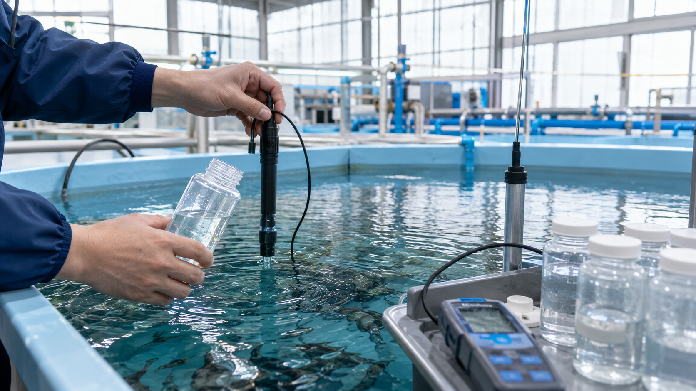
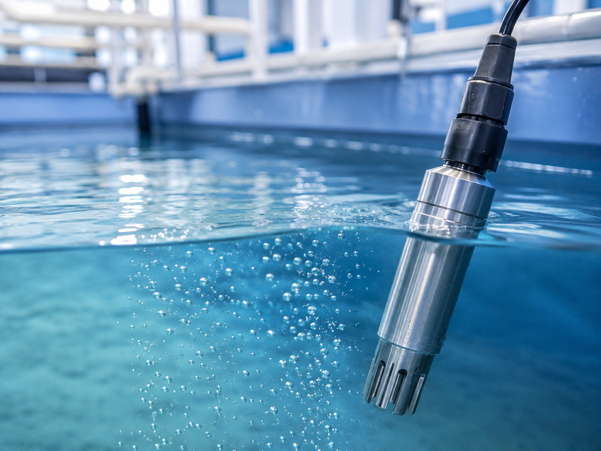

水質管理
アンモニア、有機物、濁り、ヌメリなどの課題は、飼育密度やろ過方式によって変わります。UFB水は、日常管理の一部として活用し、水質管理を支援する位置づけで検討します。
LAND AQUACULTURE
陸上養殖は、水温、水質、酸素濃度、飼育密度を管理しやすい一方で、設備負荷と運用負荷が集中します。
特に閉鎖循環式では、ろ過、殺菌、酸素供給、排水処理、配管設計が連動します。どれか一つの装置だけで解決するのではなく、水の入口、循環、洗浄、排水までを一体で見て、施設ごとに設計することが重要です。
WATER DESIGN
UFB DUALは、既存のろ過・酸素供給・殺菌設備を補完する技術として、施設の水の流れに組み込みます。

アンモニア、有機物、濁り、ヌメリなどの課題は、飼育密度やろ過方式によって変わります。UFB水は、日常管理の一部として活用し、水質管理を支援する位置づけで検討します。

魚種、水温、密度により必要な溶存酸素量は変わります。酸素供給装置やエアレーションと組み合わせ、酸素UFBの活用を検討できます。

設置位置、バイパス配管、ストレーナー、点検スペース、停止可能時間を整理し、運用しやすい導入方法を設計します。
APPLICATION
施設全体へ供給する水の入口で、流量、圧力、素材条件に合わせた導入を検討します。
ろ過・殺菌・酸素供給と干渉しない位置を確認し、水質管理の一部としてUFB水の活用を検討します。
ろ過槽や清掃導線と組み合わせ、ヌメリや有機物の蓄積に対する日常管理の負担軽減を目指します。
DESIGN FLOW
初期相談では、施設種別、魚種、水量、水槽数、既存設備、現在の課題を確認します。配管図、ポンプ能力、設置スペースがある場合は、導入位置や施工範囲の検討精度が上がります。
UFB DUALの口径、素材、設置位置、ストレーナー、バイパス配管、酸素などの気体供給方法は、施設ごとに検討します。
相談・資料請求FAQ
水量、圧力、配管、魚種、既存設備により適用可否や設置位置は変わります。現場条件を確認したうえで提案します。
置き換えではなく、酸素供給設備やエアレーションと組み合わせて検討します。必要な酸素量は魚種や密度、水温で異なります。
効果は条件により異なります。HP上では断定せず、現場条件と運用方法に合わせて、改善が期待される範囲を個別に検討します。